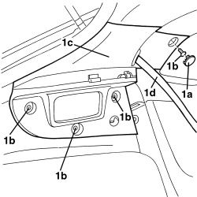
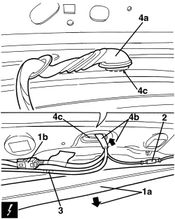
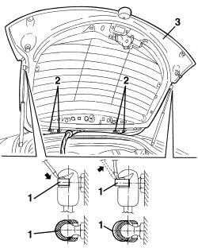

7210E56 R.R. TAILGATE
- Path
- Procedures > 72 PANELS AND FRAMES > 7210 REMOVING-REFITTING > 7210E EXTERNAL PARTS > 7210E56 R.R. TAILGATE
- Kind
- repair procedure (removal / refitting; the operation number is the code)
- Applies to
- all engines; all production periods
- Interactive page
- https://sloeber94.github.io/elrnDB-aBrrSpdr/en/#/946002740
Applies to: all engines; all production periods
 Removing
Removing
 Refitting
Refitting- Open the tailgate
Op. 7040H38 CENTRE PILLAR UPPER ELEMENT (ONE), LEFT OR RIGHT - R.R
- Remove the rear parcel shelf.
Op. 7040G30 BOOT LIGHT BULB HOLDER - R.R.
1. Working on the left and right rear pillar covers, release the bolt covers (1a).
Undo the bolts (1b).
Move and lower the pillar covers (1c) without releasing them from the seat belts (1d).

Applies to: all engines; all production periods
- Release the door housing seals in the area of the roof lining.
1. Gently lower the roof lining (1a) and disconnect the electrical connection (1b).
Description | Component |
|---|---|
REAR / TAILGATE COUPLING |
2. Disconnect the radio aerial connection.
3. Disconnect the rearscreen washer fluid pipe.
4. Disconnect the duct seal (4a) and extract the wiring/pipe (4b) from the bodyshell, passing it through the opening (4c).

Applies to: all engines; all production periods
1. Support the tailgate appropriately then, using a screwdriver, release the telescopic struts upper retaining clips (without detaching them).
2. Loosen the tailgate fixing bolts.
3. Remove the tailgate.

Applies to: all engines; all production periods
Refitting
Removing- Check that the tailgate is not damaged.
- Position the tailgate and screw in the bolts fixing it to the hinges without fully tightening them.
- Attach the support devices and fit the clips.
- Fit the wiring/pipe and fasten the duct seal.
- Connect the rearscreen washer fluid pipe.
- Connect the aerial connection and the electrical connection.
- Adjust the tailgate.
Op. 7015A14 TAILGATE - ADJUST CENTRING AND PROFILE - INCLUDES HINGE AND COMPARTMENT SEAL ADAPTATION
- Position the roof lining and fit the door housing seals.
- Position the pillar trims, secure them using the bolts and refit the bolt covers.
Op. 7040G30 BOOT LIGHT BULB HOLDER - R.R.
Op. 7040H38 CENTRE PILLAR UPPER ELEMENT (ONE), LEFT OR RIGHT - R.R
Topics linked from this page (4)
- 7015A14 TAILGATE - ADJUST CENTRING AND PROFILE - INCLUDES HINGE AND COMPARTMENT SEAL ADAPTATION
- 7040G30 BOOT LIGHT BULB HOLDER - R.R.
- 7040H38 CENTRE PILLAR UPPER ELEMENT (ONE), LEFT OR RIGHT - R.R
- D085 REAR/TAILGATE COUPLING